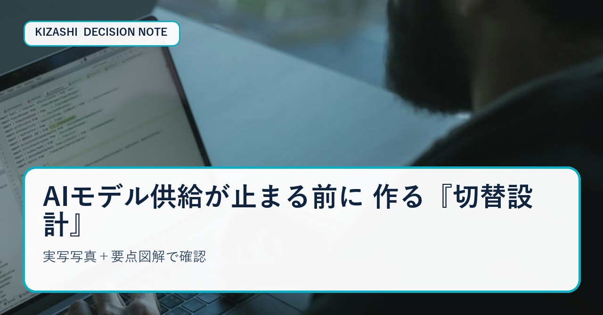
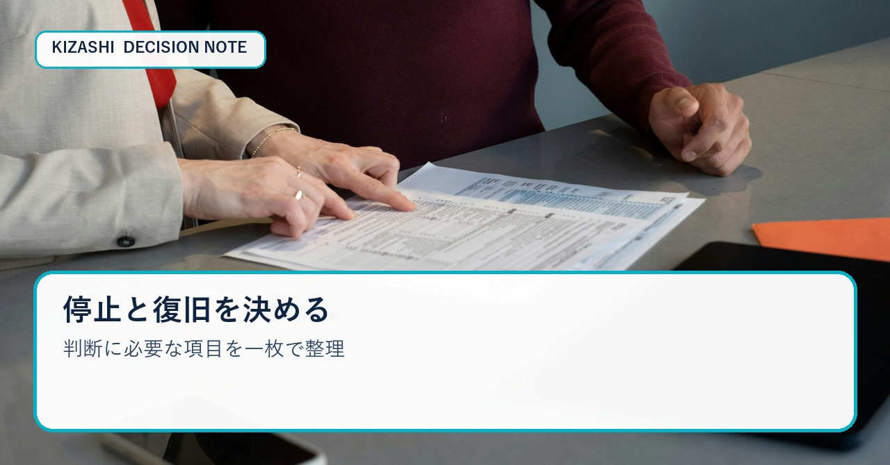

AIモデル供給が止まる前に
作る『切替設計』


使っているAIモデルや開発サービスが、ある日突然使えなくなる。そう聞くと「障害対策」の話に見えます。しかし実務で本当に怖いのは、完全な突然停止よりも、終了日が示されたのに担当者が何から着手すべきか分からず、移行期間を使い切ってしまうことです。
2026年8月28日、OpenAIはSpaceXに対し、CursorへOpenAIモデルを提供する契約を終了する意向を通知したと公表しました。提案された停止日は11月12日で、契約上最大の通知期間と説明されています。将来のモデルはCursorへ提供しない方針も示されました。
ここで大切なのは、個別企業の是非を論じることではありません。利用者側が学べるのは「モデルやベンダーは永続する前提で業務へ組み込めない」という、ごく現実的な運用原則です。
本稿では、残された期間を“代替サービス探し”だけに使わず、業務停止を避ける切替設計へ変える方法を解説します。読み終えた時点で、依存関係台帳、移行優先度、二重稼働テスト、データ退避、切替判定という5つの作業を始められる状態を目指します。
まず確認する一次情報
今回の一次情報はOpenAIの公式発表です。確認できる事実は、契約終了の意向が通知されたこと、提案停止日が2026年11月12日であること、契約上最大の通知期間だと説明されていること、将来モデルをCursorへ提供しない方針が示されたことです。
一方で、この発表だけから「現在のすべての機能が直ちに止まる」「すべてのCursor利用者が同じ影響を受ける」「代替先なら性能が必ず維持できる」とは言えません。影響範囲は契約、プラン、利用機能、地域、時点によって変わります。自社の画面、契約通知、公式更新を別途確認してください。
根拠：[OpenAI公式発表](https://openai.com/index/our-decision-on-cursor-following-its-acquisition-by-spacex/)
切替設計の出発点は「ツール名」ではなく「業務」
移行会議で最初に「次はどのAIを使うか」と聞くと、比較表づくりが始まります。しかしツール比較を先にすると、実際に守るべき業務が隠れます。
最初に書くのは、AIが担当している仕事です。たとえば、コード補完、レビュー、テスト生成、社内文書検索、問い合わせ分類、画像説明、翻訳などです。同じツールの中でも、停止時の影響は違います。補完が止まれば速度は落ちても仕事は続けられるかもしれません。一方、唯一の問い合わせ分類経路に組み込んでいれば、受付そのものが止まります。
台帳には、少なくとも次の項目を入れます。
- 業務名と責任者
- 利用モデル・API・アプリ・拡張機能
- 入出力するデータの種類
- 認証方式と権限
- プロンプト、評価セット、ログの保存場所
- 停止した時に許容できる時間
- 手作業へ戻せるか
- 代替候補と現在の検証状況
ここで「分からない」を空欄にしないことが重要です。未確認と明記し、誰がいつ確認するかを決めます。取得不能な値をゼロとして扱えば、リスクが消えたように見えるからです。
残り期間を4つの区間に分ける
終了日が示されたら、全期間を均等に使ってはいけません。最後の数日に移行を集中させると、認証、法務、データ形式、品質差、料金上限のどれかで詰まります。
区間1：影響を見える化する
最初の1週間で依存関係を洗い出し、「停止すると売上・顧客対応・法令順守へ直結する業務」を上位へ置きます。利用回数だけで優先度を決めないでください。月1回でも、決算や本人確認に使う工程なら重要度は高いからです。
区間2：代替候補を同じ評価セットで比べる
候補モデルへ同じ入力を与え、正確さ、拒否の挙動、速度、費用、出力形式、ログ保管、地域、データ利用条件を比べます。感想ではなく、実務で発生した代表ケースを20〜50件ほど固定し、合格条件を決めます。
区間3：小さい範囲で二重稼働する
本番の一部を現行と代替の両方へ通し、差分を記録します。いきなり全面切替すると、失敗時に原因がモデル、プロンプト、認証、周辺コードのどこか分かりません。対象利用者や処理量を限定し、戻せる構成で試します。
区間4：終了日前に切替を完了する
契約終了日を社内の切替日にはしません。社内切替日は少なくとも数営業日前へ置き、残りを復旧余白にします。旧経路を残せる場合でも、誰がどの条件で戻すか、いつ完全停止するかを決めます。
“互換API”だけでは移行できない
APIの形が似ていても、業務上の互換性は別問題です。同じメッセージ形式で呼べても、ツール呼び出し、JSONの厳密さ、長文処理、画像入力、安全拒否、レート制限、再試行時の挙動が変わります。
特に確認したいのは次の5点です。
1. 出力形式が下流システムの期待と一致するか
2. タイムアウトや混雑時に二重処理が起きないか
3. モデル名をコードへ直書きしていないか
4. プロンプトが特定モデルの癖へ過剰適合していないか
5. 評価結果と費用を同じ単位で比較できるか
モデル選択を設定ファイルへ切り出し、呼び出し部分を共通化すると次回の切替は速くなります。ただし抽象化を増やしすぎると各モデル固有の強みを失います。共通化する部分と、モデル別に最適化する部分を分けてください。
データと監査証跡を先に退避する
移行作業ではモデル性能ばかり見がちですが、後で困るのは履歴です。プロンプト、設定、評価結果、利用ログ、請求明細、権限一覧、承認記録、障害対応履歴を、契約終了後も確認できる場所へ保存します。
秘密情報そのものを台帳や公開Boardへ書いてはいけません。保存するのは、秘密情報の保管先、責任者、更新日、失効日、ローテーション手順です。APIキーの値ではなく、キーが正しく管理されていることを監査できる構造を残します。
切替判定は「平均点」ではなく停止条件で行う
代替候補の平均品質が高くても、重要な1ケースで危険な誤答を出すなら本番へ入れられません。合格条件と同時に、停止条件を決めます。
- 個人情報や機密を不適切に出力した
- 構造化出力が一定回数連続で壊れた
- 費用上限を超える見込みになった
- 外部処理結果が不明で二重実行の恐れがある
- 人が確認すべき対象を自動処理した
停止後の復旧経路も必要です。手作業へ戻す、旧経路へ一時的に戻す、処理をキューに残す、利用者へ遅延を通知する、といった選択肢を事前に決めます。
今日から使える一枚チェック
最後に、会議でそのまま使える形へまとめます。
**依存**：何の業務が、どのモデル・API・認証・データに依存しているか。
**期限**：公式停止日、社内切替日、二重稼働開始日、復旧余白はいつか。
**品質**：代表ケース、合格条件、重大NG、評価責任者は決まっているか。
**費用**：平常時と混雑時の単価、上限、追加課金の承認者は誰か。
**復旧**：失敗時に誰が止め、どこへ戻し、何を照合して再開するか。
会議を30分で終える進行例
切替会議が長引く原因は、事実確認、選択肢の比較、意思決定を同時に行うことです。30分なら三つに分けます。
最初の10分は事実だけを確認します。公式終了日、対象機能、現在の利用部署、処理件数、契約担当、保存済みデータです。推測や評判はこの時間に入れません。
次の10分で影響度を付けます。「止まっても翌営業日まで待てる」「4時間以内に戻す必要がある」「停止すると顧客や売上へ直結する」の三段階で十分です。細かい点数を作るより、最優先で検証する業務を選べることが重要です。
最後の10分で担当と期限を決めます。代替候補を調べる人、評価セットを作る人、契約とデータ退避を確認する人、切替判定を行う人を分けます。議事録には「検討する」ではなく、成果物、担当、期限、再開条件を書きます。
台帳の記入例
問い合わせ要約を例にすると、依存業務は「担当者が返信前に過去経緯を読む時間の短縮」、許容停止時間は1営業日、代替は手動要約、評価は事実抜けと誤った断定、社内切替日は公式停止日の5営業日前、といった形です。
この粒度なら、モデル名が変わっても台帳は使い続けられます。逆に「AI機能」「重要」「移行予定」とだけ書くと、誰も次の行動へ移れません。
まとめ
モデル供給や契約が変わること自体は、利用者側で止められません。しかし、変化が起きた時に業務まで止まるかは設計で変えられます。
終了日を見たら、代替ツールの人気ランキングを探す前に、依存関係を業務単位で洗い出してください。次に、代表ケースで比較し、小さく二重稼働し、終了日前に切り替える。データと監査証跡を退避し、停止条件と復旧経路まで決める。
この順序なら、今回だけをしのぐ移行ではなく、次の変更にも耐える運用資産が残ります。
そして、切替設計は大企業だけのものではありません。少人数のチームほど、担当者の記憶に依存せず、一枚の台帳と小さな評価セットを共有する効果があります。今日すべてを完成させる必要はありません。最重要の業務を一つ選び、依存先、戻し方、確認担当を書くだけでも、次の変更通知を受けた時の初動は変わります。
※本稿は公開一次情報を基にした一般的な業務設計の解説です。個別の契約、法務、セキュリティ判断は各社の担当者と確認してください。